1. 一句话
交付包是一个压缩包，加一个校验文件：Finance-Audit-Nexus-PoC
v0.7.10，九安 × Nexus PoC 的交接内容：九安 v0.7.10
测试台的全部代码（新前端、外壳、九安副本的构建脚本和补丁、部署脚本）、知识库工具、Nexus
上两个 Agent 的提示词与工具、nexus-ai-operator
Skill、测试、交接文档（Markdown 和 HTML）、图，再加上测试证据
evidence/。2026-11-02 起不再带 v0.5.3
PoC（poc/app/、poc/tools/、knowledge-agent/、contract/、skills/agent-access/、v0.5.3
的参考补丁），见变更记录。除了
evidence/，包里的内容和交接仓库 https://github.com/LiboMa/nexus-jiuan-agent-framework-poc-guide
一致，两边由同一份白名单生成（第 9 节）。2026-11-05
起，历史的设计稿、实现计划、进度看板、历次评估都从仓库里删了（在 git
历史里）；以后再写的设计稿和计划放
docs/specs/、docs/plans/，不进包。密钥和九安开发包也不在包里，另行交接（第
5 节）。拿到之后按第 6 节验收，按第 8 节签收。从零部署一整套（先 PG
与知识库后端，再 Nexus 上的 Agent，再前端）照交付指南。

2. 生成与校验
生成（在维护人的电脑上，audit-nexus/
目录下）：
docs/delivery/make-package.sh脚本按顺序做这些事，任何一步失败就停下来，不出包：
- 跑检查：部署脚本和栈模板的测试（
poc/infra/test）；构建九安 v0.7.10 副本，跑外壳poc/app的单元测试；知识库工具的语法检查和单元测试（kb/tests，在 uv 的临时环境里装上 openpyxl、pdfplumber 等再跑）；两个文档管家的语法检查；审核 Agent 下发脚本的单元测试（audit-agent/tests）； docs/build-html.sh --check：图和 HTML 都是最新的；- 按白名单把文件拷到暂存目录（第 4
节），排除生成物、依赖、杂物和密钥；只带进了 git 的文件（白名单目录里没
git add过的草稿、笔记不带，列出文件名；evidence/除外，它只进交付包）；出包前用customer-deploy/knowledgebase-writer-agent-pg/release/SHA256SUMS核对两个 zip； - 脱敏：
docs/delivery/sanitize.py按对照表sanitize.conf（只在开发目录）把 AWS 账号和 EC2 的标识换成 AWS 文档的示例值，再按格式补一遍；还留着对照表里的真实值就停下； - 密钥检查：暂存目录里不能有
secrets.env，不能有像nxa_/nxc_/nxp_/afp_密钥、AWS 访问密钥或私钥的字符串，也不能出现本机secrets.env里任何一个真实的值（只报文件名，不打印值）；制度原文（.docx）也不能出包； - 写
MANIFEST.txt（每个文件的 sha256）； - 打包成
dist/<版本>.tar.gz（版本取自根目录的VERSION，空格换成-：dist/Finance-Audit-Nexus-PoC-v0.7.10.tar.gz），并写同名的.sha256。
校验（拿到包的人）：
shasum -a 256 -c Finance-Audit-Nexus-PoC-v0.7.10.tar.gz.sha256 # 包没被改过
tar -xzf Finance-Audit-Nexus-PoC-v0.7.10.tar.gz
cd Finance-Audit-Nexus-PoC-v0.7.10 && shasum -a 256 -c MANIFEST.txt --quiet # 每个文件都对得上
open docs/delivery/README.html # 从文档索引开始3. 按角色从哪读起

| 角色 | 先读 | 然后动手 |
|---|---|---|
| 部署的人（我们、九安运维） | 交付指南 → 各块自己的说明（kb/GUIDE.md、审核 Agent 说明、部署说明） | 照交付指南第 4 节部署三块，第 5 节跑端到端验收 |
管理员（测试台上的 poc-） |
快速上手 | 照着做一遍：连接 Nexus、启用 Agent、设为审批 Agent、测试、在单据池里用 |
| 九安的开发 | 开发者快速对接指南 → 架构 | 拿一个业务需求，按指南在 Nexus 上写一个 Agent、在「Agent 接入」页测它 |
| 项目负责人 | 本文 → 交接文档第 1、6 节（含 6.1 上生产前必须改的）→ 客户部署路线 | 按第 6 节验收，第 8 节签收 |
| 应用开发 | 交接文档 → 架构 → PoC 说明 → 部署与迭代规范 | 跑本机测试；在页面上走一遍工作台、单据池、Agent 接入、知识库 |
| 运维 / 值班 | 交接文档第 2、5 节 → 运维与后续迭代 → 部署与迭代规范第 6 节 → 部署说明 | 练一次 deploy.
和一次回滚 |
| Agent 开发 | Skills 配置指南 → 开发者快速对接指南 → 审核 Agent 说明 → 运维第 2.1 节 | 改一版提示词，用 apply.
看比对，在「Agent 接入」页测试 |
4. 包里有什么
| 目录 | 内容 | 看哪份文档 |
|---|---|---|
docs/ |
交付文档（本文、快速上手、交付指南、开发者快速对接指南、Skills
配置指南、客户部署路线、交接、部署与迭代、运维），每份有
. 和
.；make-（打包、导出交接仓库）与
sanitize.（脱敏） |
交付文档索引 |
docs/ |
diagrams/：图（.
是源，. 由 build-
生成）；screens/：截图 |
第 7 节 |
docs/（其余） |
架构与技术评估、工作流、kb.
约定（每份有 . 和
.）、build- 与
html- |
这三份 |
poc/ |
九安 v0.7.10
测试台的外壳（组合根、前门、口令登录、假汇联易、出网守卫、「Agent
接入」页和知识库页的后端、新前端用的接口）；lib/（A2A
客户端、名片规整、operator 命令行、口令登录、HTTP
小工具）；test/
单元测试、test/
端到端测试（run.、web.、api.） |
PoC 说明 |
poc/ |
新前端（React 19 + TypeScript + Vite + Tailwind
4，哈希路由）：工作台、单据池、知识库、我的规则、Agent
接入、设置；npm test、npm run build（不带
node_、dist/） |
PoC 说明 |
poc/ |
build-（九安 v0.7.10
副本：按清单复制，不带
seeds/、database/、tests/，打
patches/；-
只给远端跑九安自带的测试用）与锁定的依赖清单（pg 8.16.3
给九安副本，mysql2 3.14.3 只给搬迁工具；不带
node_，构建时
npm ci -）；一次性的 MySQL →
PostgreSQL 搬迁工具 mysql-
和它的测试
test/；pg-：换库前后九安自带测试的结果（baseline-、after-）和删掉、改写的测试清单
removed- |
交接文档第 2.1 节 |
patches/ |
打进九安 v0.7.10 副本的补丁：0001 连 Nexus 列发布，0002「Agent
接入」页（一张表、测试、调用记录），0003 启用即就绪、审批流只调一个审批
Agent，0004「规则库 ›
制度知识库」页（上传、入库预览、历史、检索、检索日志），0005
规则页跟着知识库方式走、「我的规则」，0006
review_ 的时限 120 → 180
秒（只改测试台的副本），0007 调用中间件给 nexus-
的时限 200 秒；以下把数据层换成 PostgreSQL（2026-11-06）：0008
src/，和原来 mysql2
连接池一样用法的 PG 连接池（返回形状、类型、错误码照
mysql2，? → $n，时间按 UTC
墙上时间读写，连接被断开不出未捕获的异常），0009 命名锁换成会话级
advisory 锁，0010 PG 的基线表结构（版本
19）、迁移、启动时的表结构核对，0011 分析主库的查询，0012 附件下载 /
解析队列、单据数据的摘要 / 清空 / 锁快照，0013
单据详情读取队列和详情投影，0014
平台层（运行记录和设置、数据页、运行锁、调用网关等），0015
审核要素和规则扫描，0016 审批回写、SAP 付款申请的存储和快照刷新，0017
PostgreSQL 是唯一的引擎、MySQL 的模块和 mysql2 依赖去掉，0018
评审后补的两处（等锁有时限 50 秒；事务里有语句出错后的 COMMIT
报错、不当成提交成功）。tests/
下是九安测试的改动，只有 -
才打 |
开发者快速对接指南 |
poc/ |
CloudFormation 模板（默认
m7g.xlarge）、deploy.、destroy.、backup.、upgrade-、migrate-、kb.、lib/、bench/（实例上的
PostgreSQL
安装与建库脚本、配置与重置脚本、九安测试用的一次性测试库、systemd
单元）、换库用过的一次性脚本（pg-、migrate-、remote-）、test/（部署脚本、模板、测试台脚本的测试与夹具）、env/、secrets.、部署说明（不含
secrets. 和各环境的配置） |
部署说明、部署与迭代规范 |
poc/ |
测试台使用说明 | PoC 说明 |
audit- |
审核 Agent 的提示词（prompt. v3，改前的
prompt-
留作回退）、下发脚本
apply.、说明；prompt-：每次改线上提示词留一个目录（2026-、2026-、2026-），里面是改前、改后、比对和下发记录 |
审核 Agent 说明 |
kb/ |
知识库部署工具（PG + pgvector 容器、库内语义检索
kb_、Nexus 数据连接器、规则入库、Agent
提示词受管规则、核对）、单元测试；convert/：把「审批风险判断卡」的
HTML 转成可入库的 .docx 和整理表的脚本（只有代码，见它的
README.）。不带
deploy.、.、.
和制度原文（.docx 只带单元测试用的仿真文档
kb/；风险判断卡的
HTML 原页面和转出来的文件都不带） |
kb/README.md、kb/GUIDE.md |
knowledgebase- |
PG 知识库 Agent「知识库文档管家（PG
版）」的源码：工具、提示词、打包与导入脚本、A2A 命令行（不带
deploy.、.、.） |
它的 README.md |
customer- |
它给客户环境部署用的成品（交付版本
1.0.1）：部署指南、编码工具部署说明、交付说明、部署手册
skill/、发布 zip
release/
与工具包
release/、打包脚本。原样从交付仓库
nexus- 收进来 |
customer-deploy/README.md、它自己的
README. |
knowbase- |
S3 Vectors 版的文档管家（只有代码，没上线）；两个文档管家共用的管理员脚本 | 它的 GUIDE. |
skills/ |
Nexus 一侧的 Skill（1.1.0，不带任何密钥）：在 Nexus 上建 Agent、发布 | Skills 配置指南 |
README.、VERSION、CHANGELOG.（根目录） |
包的入口说明、版本号、这个版本改了什么 | — |
evidence/ |
各轮的测试证据与截图；evidence/
是九安 v0.7.10
端到端测试的截图；evidence/
是最近一次端到端测试的结果 |
— |
MANIFEST.、PACKAGE- |
每个文件的 sha256；生成时间与检查结果 | 第 2 节 |
特意不放进包的：node_modules/、.build/（九安副本
.build/jiuan/，deploy.sh
每次重建）、dist/（含新前端的构建产物）、archive/（旧证据、旧包）、__pycache__/、.DS_Store；以后再写的设计稿和实现计划（docs/specs/、docs/plans/）；客户的制度原文（知识库的来源文档，例如
docs/sample-docs/ 里的
.docx；导出时还会按文件名再查一遍，查到就不出包）；和这个 PoC
无关或已过时的
get_passwd.sh、poc/a2a-entry/（第四轮的旧验证，不再部署）、poc/infra/design-jiuan-nexus-integrate.md（原始笔记）。这些都还留在维护人的电脑上。
5. 不在包里、另行交接的
| 东西 | 为什么不在包里 | 怎么交接 |
|---|---|---|
poc/（包里有样例
secrets.，没有真实的值） |
有两条口令和测试台的密钥：BENCH_、JIUAN_（九安的
PostgreSQL）、JIUAN_（原来的两项 MySQL
口令 2026-11-06 随 MySQL 删了，deploy.
见到就删掉）。Agent 的调用密钥不在这里：管理员在「Agent
接入」页启用，加密存在九安的库里。JIUAN_
丢了，库里的启用记录就解不开 |
当面交接（不经聊天工具、邮件、网盘）；接手后放回
poc/，权限 0600 |
各环境的配置
poc/、钉住的主机公钥
poc/ |
有实例、网段、密钥对名字和私钥路径等环境信息 | 照 env/
自己写；主机公钥第一次部署时自动钉住 |
九安开发包
source/ |
第三方代码，按版本号引用；seeds/、database/
含真实数据 |
从九安按版本号取，解压到包根目录下的同名路径；build-、外壳的单元测试、deploy.
都要用到它 |
~/（operator 凭证） |
个人凭证 | 不交接；接手的人用自己的 Nexus 账号和 API 密钥 |
| 各人的 Nexus API 密钥 | 个人凭证；每把只能给一个地方用 | 接手的人在自己的 Nexus 网页「个人设置 › API
密钥」生成，交给编码工具里的 nexus-ai-operator（Skills 配置指南第 3
节）；另生成一把，在「Agent 接入」页「连接 Nexus」时用。包里的
skills/
不带任何密钥 |
测试台上的数据（九安的 PostgreSQL 里的 jiuan
库、知识库的 PG、/） |
在线上；单据是虚构的，端到端测试每次都会重建 jiuan
库；启用记录里有加密的调用密钥 |
留在实例上；backup. 的根卷快照里有一份；换机器用
migrate-（运维第 2.5 节） |
| AWS 与 Nexus 的访问权限 | 账号权限 | 由项目负责人另行授予（交接文档第 5 节） |
6. 验收清单
| # | 验收项 | 怎么做 | 通过的样子 |
|---|---|---|---|
| 1 | 包完整 | 第 2 节的两条 shasum |
两条都 OK |
| 2 | 文档能打开 | 浏览器打开
docs/，点进每一份 |
每份都有图、表、目录；图能点开看原尺寸 |
| 3 | 部署脚本、模板、测试台脚本的测试 | cd poc/ |
0 失败（没有九安开发包时，副本构建的那几条跳过） |
| 3a | 新前端和外壳 | 先放好九安开发包（第 5
节），cd poc/，再
bash poc/（外壳有一条测试读新前端的构建产物，没构建就跳过） |
都是 0 失败 |
| 4 | 知识库工具、审核 Agent 下发脚本 | python3 -、python3 - |
全部通过 |
| 4a | nexus-ai-operator 能装上 | 按 Skills 配置指南第 3 节装进自己的编码工具，用一把 API 密钥连接 | nexus. 是自己 |
| 5 | 文档是最新的 | docs/（需要
pandoc、mmdc、Chrome） |
「图和 HTML 都是最新的」 |
| 6 | 线上可用 | curl -（站点见交接文档第 2.2 节） |
HTTP 200 |
| 7 | 页面走一遍 | 管理员登录 → 工作台 → 单据池打开一张单（AI 建议、原件）→「Agent 接入」（审批 Agent、知识库 Agent 就绪）→ 在审批 Agent 上「测试 › 单据」 | 测试返回合格的建议，调用记录里多一行 |
| 8 | 完整端到端测试 | KB_（第一次会自动
npm install Playwright；开始前重置 jiuan
库，保留「Agent 接入」的启用记录；需要 secrets.
里的两个口令；约 1–3 美元的 Nexus 调用） |
0 失败（共 27 条：web 15、api 12；没给
KB_ 时上传那条跳过）。2026-11-02 对 m7g
测试环境完整运行 26 条全部通过（web 15、jiuan 11）；2026-11-06
换库后的结果见 CHANGELOG.；截图交项目负责人 |
| 9 | 未完成事项知情 | 读交接文档第 6 节 | 每一条都有负责人和时间 |
7. 现在的状态（2026-11-06）
已完成
- 九安 v0.7.10 测试台（2026-10-26 封板
v0.7.10，之后持续更新）：新前端
poc/web（2026-11-01 起是首页）、外壳poc/app、补丁 0001–0018；单据池自动出 AI 独立建议，一轮上限 180 秒，2026-11-01 改过审核 Agent 的提示词以后一轮 7–20 秒；人在单据抽屉里采纳或改判，不回写汇联易。 - 知识库：PG + pgvector，整库 Cohere Embed
v4；测试台经 Nexus 上的 PG 知识库 Agent
读写（
kb.rules/v1）；有效的规则是审批风险判断卡（449 条）。PG 知识库 Agent 的客户部署交付件 1.0.1 在customer-deploy/。 - 部署分三块、经 SSH 管理、默认
m7g.xlarge（arm64）；换机器有
migrate-data.sh。2026-11-02 起 m7g 测试环境上线，Nexus 的 PG 连接器指向它。 - 只留新 UI（2026-11-02）：v0.5.3 PoC 的代码、文档和测试都拿掉了；交付包的检查和白名单跟着改。
- 九安的库换成 PostgreSQL（2026-11-06，补丁
0008–0018）：测试台的库在容器
jiuan-pg里，72 张表、104,538 行逐表核对一致搬过来，停站约 2 分 10 秒；切换前的 MySQL 当天晚上删了，回不到 MySQL 了（留下切换后的pg_dump和切换前的根卷快照）。九安自带的测试在真 PG 上 2475 条过，换库前过的都还过。 - 测试：2026-11-02 对 m7g 测试环境完整端到端 26 条全部通过；2026-11-06
换库后（27 条）的结果见
CHANGELOG.md。 - 交付文档 8 份加索引、架构文档，Markdown 和 HTML 两个版本；由源码生成的图。
还没完成（详见交接文档第 6 节）
- 旧栈
andon-finance-poc还没删（jiuan-v0710.tinyboat.blog2026-11-02 已迁到 m7g 栈，m7g 实例上 v0.5.3 留下的数据已清；旧栈项目负责人定先留几天）。 - 构件和健康检查还不带提交号（评审 C1 的后一半）；源站还是明文 HTTP（评审 C2）。
- 值班看不到 Nexus 调用的问题（评审 I6）。
- 九安上游的
review_advice@1时限还是 120 秒，建议九安调高。 - 九安原来就有的一个审核要素发布的竞态没改；换库评审记下的小问题没改（交接文档第 6 节第 18、19 条）。
- 上生产前必须改的，见交接文档第 6.1 节。
8. 签收
| 项 | 交出 | 接收 | 日期 | 备注 |
|---|---|---|---|---|
| 交付包（文件名与 sha256） | ||||
| 测试台（九安的 PostgreSQL、知识库的 PG、测试台密钥、升级前快照） | ||||
secrets.（当面） |
||||
| AWS 与 Nexus 权限 | ||||
| 验收清单第 1–7 项（含 3a、4a） | ||||
| 验收清单第 8 项（完整端到端测试） | ||||
| 未完成事项（第 7 节）的负责人与时间 |
9. 以后怎么更新这个包和交接仓库
- 改代码按部署与迭代规范走完；
- 改文档改
.md、改图改assets/diagrams/*.mmd，再运行docs/build-html.sh； - 改根目录的
VERSION，在CHANGELOG.md加一节； - 同步交接仓库：
docs/delivery/make-package.sh --export <交接仓库的工作副本>。跑完全部检查和密钥检查后，把白名单里的文件同步过去（.git保留，白名单外的旧文件删掉），再在那边提交、打标签、推送； - 出新包：
docs/delivery/make-package.sh，文件名就是版本；旧包和它的.sha256一起移进archive/dist/。
白名单写在 make-package.sh
里，交付包和交接仓库共用：要加一类交接内容，就加一行
copy；设计、过程类的文件放进
NOT_HANDOVER。